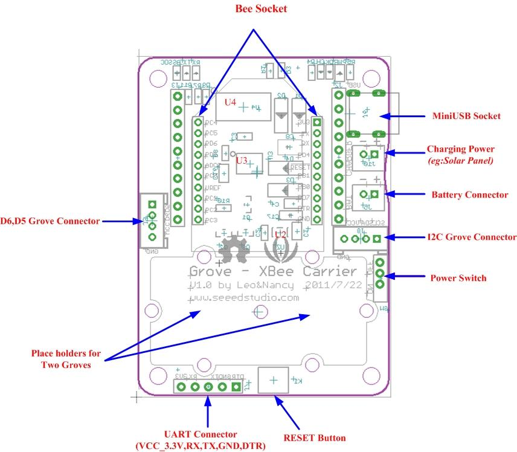
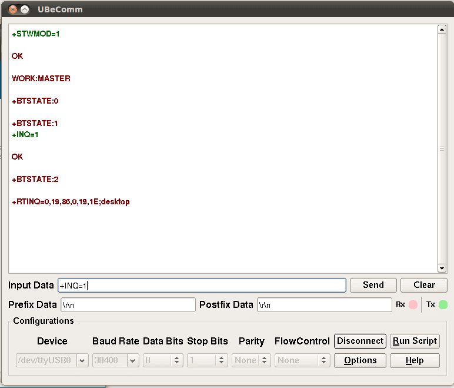

The Grove - XBee Carrier is a Wireless Sensor Network (WSN) base board designed for Bee series and Grove units. It is primarily suitable for standalone Bee Nodes like RFBee, Wifi Bee which have ATMega328 onboard and XBee (Zigbee) modules. It is compatible with RFBee, Wifi Bee, XBee and Bluetooth Bee. Besides a Bee receptacle, there are also two Grove connectors. The board can be powered by a lithium battery or through USB cable. You can use a Wireless charger, Solar Panel or the USB cable to charge the battery. The FT232RL chip onboard helps in downloading the program to Bee Module directly.
Bees which do not have ATMega328 like Bluetooth Bee can only be configured by using on-board FT232RL (USB to UART). Theses Bees are not suitable for standalone applications.
The on-board FT232RL can be used like any other 3.3V USB to UART interface when not connected to any Bee Modules. This is useful for programming a 3.3V MCU through Serial Port.
Model: SLD71385P

| Item | Min | Typical | Max | Unit |
|---|---|---|---|---|
| Voltage | 3.0 | 3.3 | 3.6 | VDC |
| Charge Controller | CN3063 | |||
| CHARGER (Charging Voltage for LiPo Battery) | 4.4V to 6V (as per CN3063 Spec) | |||
| Charging Current | Max 500mA | |||
| 3.3V LDO | Low Noise and Micropower type. Suitable for Battery Application. | |||
| I/O Logic | 3.3V Logic | |||

U2: RT9167A_33PB IC, 3.3V LDO Lownoise Micropower Regulator U3: CN3083 IC, Charger controller for Lithium batteries (charging using solar panel) U4: FT232RL IC, USB to serial UART interface
When using an RFBee, the following pinouts of ATmage168 on RFBee apply for using the Arduino IDE
Pin 5 is the Grove connector for I/O - Yellow wire
Pin 6 is the Grove connector for I/O - White wire
Pin 16 may need to be driven low to provide enough power to the I/O Grove [via mosfet]
Pin 17 may need to be driven low to provide enough power to the I2C Grove [via mosfet]
Note: you can use the x2 Grove cable with the white and yellow wires swapped on one to access both I/O.
Now you can choose a suitable battery for your application from SeeedStudio Batteries and Chargers

Bee Nodes are standalone Arduino Compatible Wireless Nodes. SeeedStudio has two such Nodes - Wifi Bee and RFBee.
This section is about those Bee modules which do not have a MCU pre-programmed with Arduino bootloader. They mostly act just like a wireless trans-receiver. These Bee Modules like Bluetooth Bee, etc.. can communicated with PC as well. In this case, Grove - XBee Carrier acts as a carrier for these Bees providing necessary power, communication interface with PC through FT232RL USB to UART.

/*
Test code for use with an XBee Carrier & an RF Bee
Turns on PD5 (eg: grove relay) on for one second, then off for one second, repeatedly.
*/
void setup()
{
// initialize the digital pin as an output [Pin 5 is the Grove connector for I/O
pinMode(5, OUTPUT);
// These lines are needed to ensure that the relay will pull in [provides power to the Grove]
pinMode(16, OUTPUT);
digitalWrite(16, LOW);
}
void loop() {
digitalWrite(5, HIGH); // set the LED on
delay(1000); // wait for a second
digitalWrite(5, LOW); // set the LED off
delay(1000); // wait for a second
}
| Revision | Descriptions | Release |
|---|---|---|
| v0.9b | Initial public release | 13th July 2011 |
If you have questions or other better design ideas, you can go to our forum or wish to discuss.
Copyright (c) 2008-2016 Seeed Development Limited (www.seeedstudio.com / www.seeed.cc)